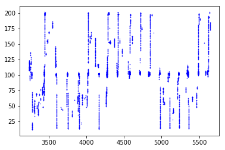
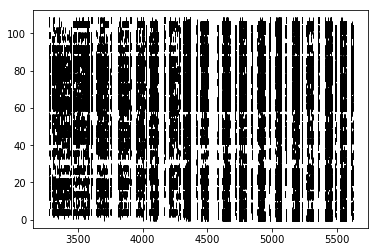
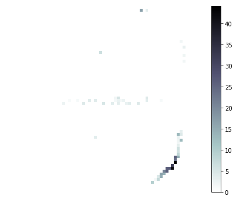

Tutorial 05 - Tuning curves and decoding¶
Goals¶
- Learn to estimate and plot 2D tuning curves
- Implement a Bayesian decoding algorithm
- Compare the decoded and actual positions by computing the decoding error
Compute the tuning curves¶
In [1]:
# import necessary packages
%matplotlib inline
import os
import sys
import numpy as np
import nept
import matplotlib.pyplot as plt
# define where your data folder is located
data_path = os.path.join(os.path.abspath('.'), 'data')
data_folder = os.path.join(data_path, 'R042-2013-08-18')
In [2]:
# load the info file, which contains experiment-specific information\
sys.path.append(data_folder)
import r042d3 as info
In [3]:
# Load position (.nvt) from this experiment
position = nept.load_position(os.path.join(data_folder, info.position_filename), info.pxl_to_cm)
# Plot the position
plt.plot(position.x, position.y, 'k.', ms=1)
plt.show()

In [4]:
# Load spikes (.t and ._t) from this experiment
spikes = nept.load_spikes(data_folder)
# Plot the spikes
for idx, spiketrain in enumerate(spikes):
plt.plot(spiketrain.time, np.ones(len(spiketrain.time))+idx, '|')
plt.show()

In [5]:
# limit position and spikes to task times
task_start = info.task_times['task'].start
task_stop = info.task_times['task'].stop
task_position = position.time_slice(task_start, task_stop)
task_spikes = [spiketrain.time_slice(task_start, task_stop) for spiketrain in spikes]
In [6]:
# limit position to those where the rat is running
run_position = nept.speed_threshold(task_position, speed_limit=1.1)
In [7]:
# Plot the running Y position over time
plt.plot(run_position.time, run_position.y, 'b.', ms=1)
plt.show()

In [8]:
# Plot the running position
plt.plot(run_position.x, run_position.y, 'b.', ms=1)
plt.show()

In [9]:
# Plot the task spikes
for idx, spiketrain in enumerate(task_spikes):
plt.plot(spiketrain.time, np.ones(len(spiketrain.time))+idx, '|', color='k')
plt.show()

In [10]:
# Define the X and Y boundaries from the unfiltered position, with 3 cm bins
xedges, yedges = nept.get_xyedges(position, binsize=3)
In [11]:
tuning_curves = nept.tuning_curve_2d(run_position, np.array(task_spikes), xedges, yedges,
occupied_thresh=0.2, gaussian_sigma=0.1)
In [12]:
# Plot a few of the neuron's tuning curves
xx, yy = np.meshgrid(xedges, yedges)
for i in [7, 33, 41]:
print('neuron:', i)
plt.figure(figsize=(6, 5))
pp = plt.pcolormesh(xx, yy, tuning_curves[i], cmap='bone_r')
plt.colorbar(pp)
plt.axis('off')
plt.tight_layout()
plt.show()
neuron: 7

neuron: 33

neuron: 41

Decoding¶
Next, let’s decode the location of the subject using a Bayesian algorithm.
Specifically, this is a method known as “one-step Bayesian decoding” and is illustrated in this figure from van der Meer et al., 2010.
In [13]:
# Bin the spikes
window_size = 0.0125
window_advance = 0.0125
time_edges = nept.get_edges(run_position, window_advance, lastbin=True)
counts = nept.bin_spikes(task_spikes, run_position, window_size, window_advance,
gaussian_std=None, normalized=True)
In [14]:
# Reshape the 2D tuning curves (essentially flatten them, while keeping the 2D information intact)
tc_shape = tuning_curves.shape
decode_tuning_curves = tuning_curves.reshape(tc_shape[0], tc_shape[1] * tc_shape[2])
In [15]:
# Find the likelihoods
likelihood = nept.bayesian_prob(counts, decode_tuning_curves, window_size, min_neurons=2, min_spikes=1)
In [16]:
# Find the center of the position bins
xcenters = (xedges[1:] + xedges[:-1]) / 2.
ycenters = (yedges[1:] + yedges[:-1]) / 2.
xy_centers = nept.cartesian(xcenters, ycenters)
In [17]:
# Based on the likelihoods, find the decoded location
decoded = nept.decode_location(likelihood, xy_centers, time_edges)
nan_idx = np.logical_and(np.isnan(decoded.x), np.isnan(decoded.y))
decoded = decoded[~nan_idx]
In [18]:
# Plot the decoded position
plt.plot(decoded.x, decoded.y, 'r.', ms=1)
plt.show()

Compare the decoded to actual positions¶
In [19]:
# Find the actual position for every decoded time point
actual_x = np.interp(decoded.time, run_position.time, run_position.x)
actual_y = np.interp(decoded.time, run_position.time, run_position.y)
actual_position = nept.Position(np.hstack((actual_x[..., np.newaxis],
actual_y[..., np.newaxis])), decoded.time)
In [20]:
# Plot the actual position
plt.plot(actual_position.x, actual_position.y, 'g.', ms=1)
plt.show()

Notice the pedestal is not represented as round, as before. This is because we are interpolating to find an actual position that corresponds to each decoded time.
In [21]:
# Find the error between actual and decoded positions
errors = actual_position.distance(decoded)
print('Mean error:', np.mean(errors), 'cm')
# Plot the errors
plt.hist(errors)
plt.show()
Mean error: 56.6082906835 cm